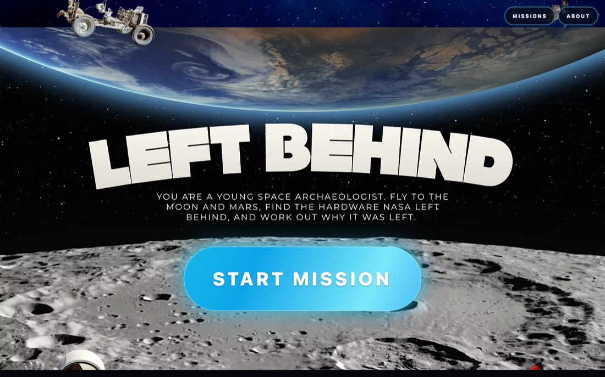
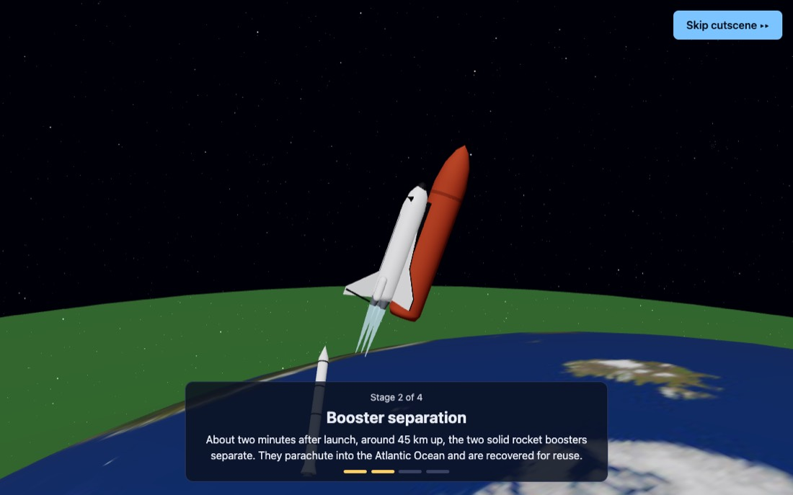
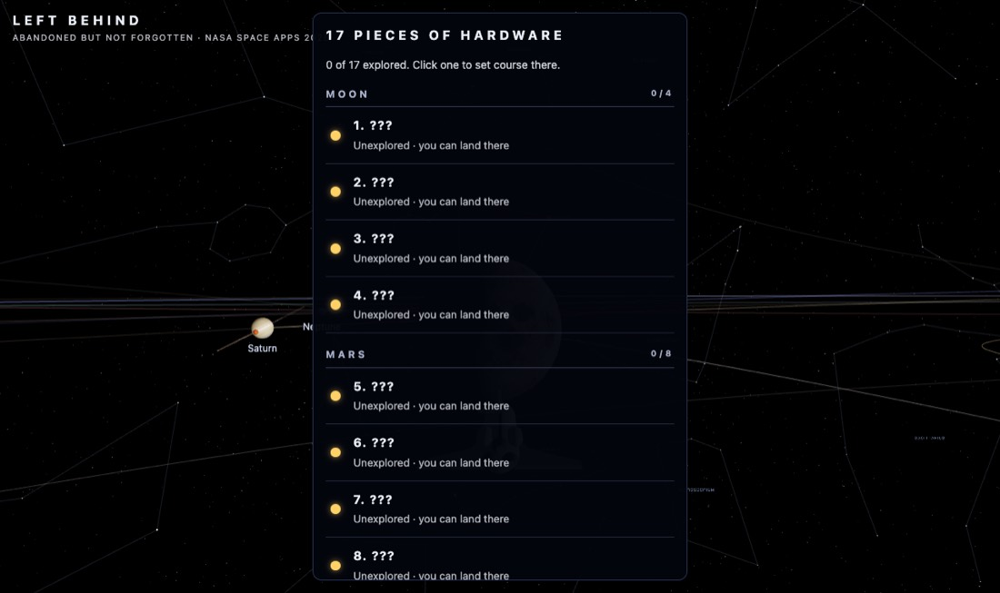
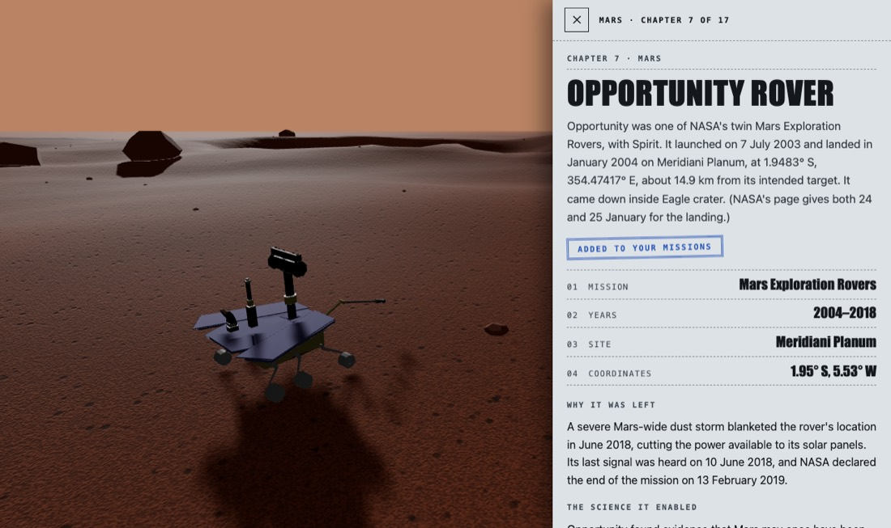

Pitch reviewer · Team Aeterna · NASA Space Apps Challenge 2026, Iligan
A browser 3D game where you play a young space archaeologist. You launch from Earth, fly a real-orbit solar system, land on the Moon and Mars, find the hardware NASA left behind, and uncover why each piece was left.
Challenge: "Abandoned but Not Forgotten: Storytelling about NASA's Discarded Equipment on the Moon and Mars". Internal study guide for the pitch team. State of the game as of 14 November 2026.
1. At a glance
What it isA free 3D game that runs in any modern web browser, on a laptop or a phone. Nothing to install.
Who it is forSchool-age space enthusiasts.
Content17 real pieces of NASA hardware: 4 on the Moon, 8 on Mars, 5 in deep space.
Core loopTravel there, find it, clean or power it up, read its story, add it to your Missions list.
Where the facts come fromNASA mission pages and NASA's 3D model collection. Every story card links its sources.
TeamAeterna ("Beyond time, beyond stars"). Members:
2. The objective
For the player: explore all 17 pieces of abandoned hardware and work out why each one was left where it is.
For the challenge: turn NASA's "discarded" equipment into stories a young audience wants to discover. The game makes three points:
These objects are real and they are still there. Landing sites sit at their real coordinates on Moon and Mars maps.
Being left behind was usually a decision or a consequence, not carelessness. A descent stage was the launch pad for the trip home. A rover outlived its plan until a dust storm cut its power. A probe ran out of fuel and was parked in a safe orbit.
They still matter. Each card says what science the equipment made possible.
3. The story
The intro (the team's Wix page, shown inside the game) sets a mystery in four beats:
Something is out there. Hundreds of man-made objects sit on the Moon and Mars. Rovers, landers, machines that once moved, listened and sent back data. Now they are still.
A question. Why is a rover parked forever? Were they forgotten, or did someone decide?
The clue. A rocket can only carry so much, so crews chose what stayed. Some objects stayed on purpose, and a few kept working.
Your mission. You are a junior space archaeologist. Find and explore the abandoned equipment.
The player answers the question one object at a time. There is no villain and no score: the reward for each find is the true story.
4. How a play session goes
Intro. Scroll the story page, then press Start mission.
Earth. You stand as an astronaut near a launch pad, with an assembly building, river, trees and mountains around you. Walk to the shuttle and board.
Launch cutscene (can be skipped). Four captioned stages: liftoff, booster separation, external tank separation, orbit.
Space. You circle Earth in the orbiter. Open Missions, pick a target, and press Warp. Planets move on real orbits and the constellations are in their real places.
Landing. In orbit of the Moon or Mars, press L and choose a site on a map. Only the first site is named. The others show "???" until found.
Surface. Walk under that world's real gravity (a jump on the Moon is about six times higher than on Earth). A mini-map tracker points to the "???" equipment.
Inspect. Walk up to the equipment and press E. Play a short minigame.
Dossier. The camera circles the equipment while a panel shows its story: what it is, why it was left, the science it enabled, where it is now, and sources.
Repeat. Return to the ship and fly to the next one. Deep-space probes are reached by warp and a spacewalk.

Intro page with the Start mission button.

Launch cutscene: booster separation.

Missions list. Unexplored hardware shows as "???".

Dossier view: Opportunity on Mars, with shadows.
5. Features
Exploration
Solar system with real planetary orbits and spins, starting from today's date. Distances are compressed so trips are short.
Warp travel to the Moon, Mars and five spacecraft.
Twelve landing sites placed at real coordinates.
Walkable terrain with craters, rocks, real-time shadows and real gravity per world.
Mini-map tracker, plus a full Moon and Mars map (M key).
Discovery
"???" labels everywhere until the player finds the equipment.
Three minigames (next section).
Dossier panel with a close-up camera on the equipment.
Missions list grouped by Moon, Mars and deep space, with progress.
Progress is saved in the browser. A Reset button clears it.
Presentation
Space Shuttle style ship and a four-stage launch cutscene.
Real NASA 3D models where NASA publishes them.
Slots for a flashback video after each minigame (videos not added yet).
Synthesized sound effects, with a mute switch.
Access
Runs in a browser, with touch controls for phones.
"View all stories" lets anyone read every story without playing the 3D parts.
6. The three minigames
Uncover the nameplate (Moon and Mars). Drag the large rocks off the plate, then brush away grey Moon dust or rust-coloured Mars dust until the name can be read.
Power up the module (Moon and Mars). Four cut wires, colour-coded and shape-coded. Drag each to its match to switch the equipment's menu on. Used for equipment with no nameplate.
Spacewalk (deep space). Leave the ship on a tether and cross to the spacecraft while rogue asteroids cut across the rope. A hit sends you back to the ship.
How it is chosen. Moon and Mars equipment picks one of the first two at random. Surveyor 3, Sojourner, Ingenuity and Phoenix always use the wires.
7. The 17 pieces of hardware
"Why it was left" is shortened from the in-game cards, which are written from NASA's pages. Where NASA's page gives no reason, the game says so.
Equipment
Where
Years
Why it was left (short)
Moon
1
Apollo 11 Lunar Module Eagle (descent stage)
Sea of Tranquility
1969
It was the launch platform for the ascent stage that carried the crew back up.
2
Apollo 15 Lunar Module Falcon, ALSEP and rover
Hadley–Apennine
1971
Descent stage was the launch platform. The ALSEP science station stayed to keep recording until 1977.
3
Apollo 12 Lunar Module Intrepid and ALSEP
Ocean of Storms
1969
Descent stage was the launch platform. The ascent stage was crashed on purpose to make the first recorded artificial moonquake.
4
Surveyor 3
Oceanus Procellarum
1967
A robotic lander. Last contact was 4 May 1967, after lunar night began. It stayed where it landed.
Mars
5
Sojourner rover and Pathfinder lander
Ares Vallis
1997
Mission ended 27 September 1997. NASA's page gives no reason.
6
Spirit rover
Gusev Crater
2004–2010
Stuck in soft soil in 2009. Contact lost after 22 March 2010, most probably from extreme cold.
7
Opportunity rover
Meridiani Planum
2004–2018
A Mars-wide dust storm cut its solar power. Last signal 10 June 2018.
8
Viking 1 lander
Chryse Planitia
1976–1982
A faulty command from Earth interrupted communications on 11 November 1982.
9
Viking 2 lander
Utopia Planitia
1976–1980
Sent data until 12 April 1980. NASA's page does not say what ended it.
10
InSight lander
Elysium Planitia
2018–2022
Mission ended 15 December 2022. The challenge description says it lost power.
11
Ingenuity helicopter
Jezero Crater
2021–2024
Last flight 18 January 2024. The challenge description says rotor damage grounded it.
12
Phoenix lander
Vastitas Borealis
2008
Mission ended 2 November 2008. NASA's page does not state the cause.
Deep space
13
Dawn
In orbit around Ceres
2007–2018
Ran out of hydrazine fuel. Left in orbit, not crashed, to protect Ceres from contamination.
14
NEAR Shoemaker
On asteroid Eros
1996–2001
Not designed to land, but touched down on 12 February 2001. Lost to extreme cold on 28 February.
15
Pioneer 10
Heading toward Aldebaran
1972–2003
Its nuclear power source decayed. Last signal 23 January 2003.
16
Pioneer 11
Heading toward Lambda Aquilae
1973–1995
Mission ended in 1995. Last contact 30 September 1995.
17
Kepler space telescope
In orbit around the Sun
2009–2018
Ran out of fuel. Retired on 30 October 2018 in a safe orbit away from Earth.
8. What is real and what is simplified
Real, from NASA or JPL
Story text, dates and figures on every card (NASA mission pages).
Landing-site coordinates on the Moon and Mars maps.
3D models: Apollo Lunar Module, Viking lander, Mars Exploration Rover, InSight, Ingenuity, Dawn, NEAR Shoemaker, Pioneer 10, Kepler, and the shape of asteroid Eros.
Gravity: Earth 9.81, Moon 1.62, Mars 3.71 m/s².
Planet orbits and spins (JPL and IAU data).
Simplified, and labelled as such
Distances and sizes in space are compressed.
Surveyor 3, the lunar rover, ALSEP, Pathfinder, Sojourner and Phoenix are stand-in models built in code. Their cards say so.
Spirit uses the Opportunity model. Pioneer 11 uses the Pioneer 10 model.
Terrain at each site is generated, not real elevation data.
Positions of Dawn, NEAR, Kepler and the Pioneers are approximate. NASA's pages give no exact position.
A shuttle could not really fly to the Moon or Mars. That part is fiction.
Before the pitch. The team's researcher should re-read the story cards against the linked NASA pages. The text was drafted with AI from those pages and has not had a full human check.
9. How it is built
Type: a static website. No server, no accounts, no data collected. Progress stays in the player's browser.
Tools: Vite, React and TypeScript, with three.js (React Three Fiber) for 3D and Rapier for physics.
Content is data-driven: all 17 entries live in one file, artifacts.json. Adding a piece of equipment means adding one entry.
Assets: models, textures and fonts are bundled with the game. The exception is the intro, which loads the team's Wix page and needs internet. Offline, a text version of the story appears instead.
No NASA logos or insignia are used. The project is not affiliated with or endorsed by NASA.
10. Use of AI (say this openly)
The game's code was written with Claude Code (Anthropic), directed by the team's design decisions and revision requests.
The astronaut, shuttle and stand-in equipment models are generated from code.
Story text was drafted by AI from NASA pages the team supplied, with the sources linked on each card.
The intro page design and its artwork are the team's own Wix site. Image sources for it still need to be listed.
The full log is in AI_USE.md.
11. Suggested pitch flow (about 4 minutes)
Hook (20 s). "Hundreds of machines sit on the Moon and Mars. Were they forgotten, or did someone decide?"
The idea (30 s). You are a space archaeologist. You go there and find out.
Live demo (2 min). Start mission, skip to orbit, Missions list, warp to the Moon, land, walk to the equipment, minigame, dossier.
Why it works (40 s). Real coordinates, real models, sourced facts, real gravity. "???" makes each find feel earned.
Honesty and next steps (30 s). What is simplified, AI use, and what comes next.
Demo tips. Use a laptop with a mouse. Hold right-click to turn the camera. Press M for the map and E to inspect. Surveyor 3 (Moon) always gives the wires minigame, which is quick. Check the venue's internet first, because the intro needs it. Have a recorded video as backup.
12. Questions judges may ask
How do you know the facts are right? Each card is written from a NASA mission page and links to it. Where NASA's page gives no reason or position, the card says that instead of guessing.
Is this really where the equipment is? The landing sites are at NASA's coordinates on the maps. Inside a site, the ground and the exact spot are generated for gameplay.
Why include spacecraft that are not on the Moon or Mars? The challenge's resource list includes them. They show that "left behind" also happens in orbit and in deep space.
What did the team do, and what did AI do? The team chose the concept, the story, the hardware list, the look and every revision. AI wrote the code and drafted text from NASA sources.
Does it work on a phone? It has touch controls and a phone layout. Performance on low-end phones has not been measured.
What is next? Flashback videos for each object, a human fact-check of every card, real terrain data, and hosting it publicly.
13. Known gaps (do not be caught off guard)
The game is not hosted online yet. It runs from the team's laptop.
Flashback videos are placeholders. Without a video file the game skips straight to the story.
The intro needs internet, and its "Built on Wix" banner is cropped out. Check Wix's terms before publishing.
Team member names are still missing from the About screen.
Not yet tested on a real phone or a low-end laptop since shadows were added.